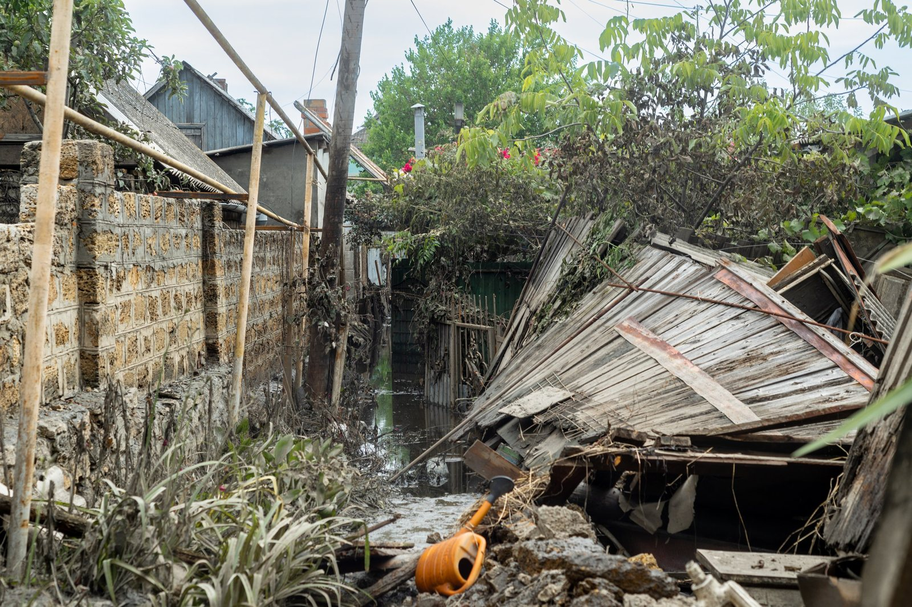
Kherson, 2023
The breach of Kakhovka dam resulted in flooding cities and villages on both banks of Dnipro and caused humanitarian catastrophe.
Some villages were left without water
Access to some of the cities and villages is still blocked because of the floods.
Inhabitants are left without food, pot water and even technical water supply is limited.
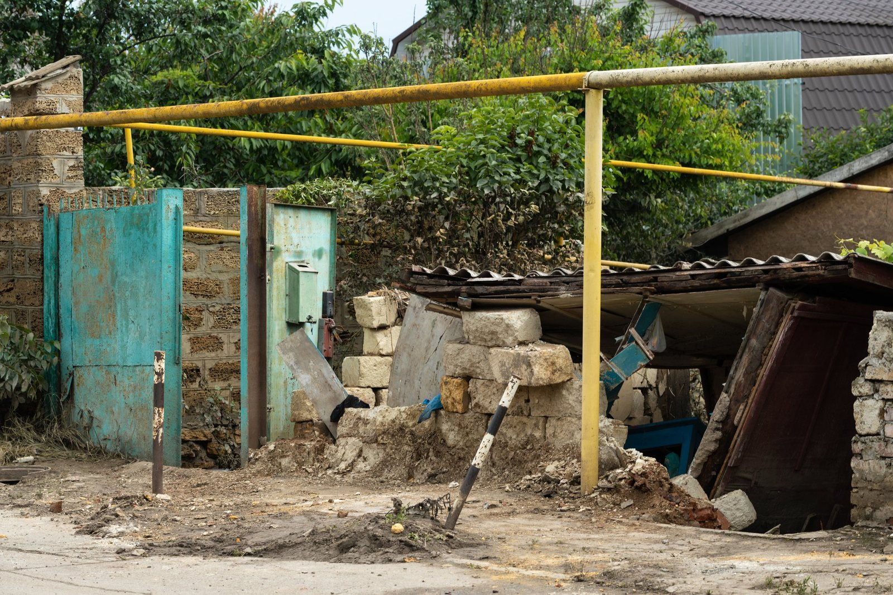
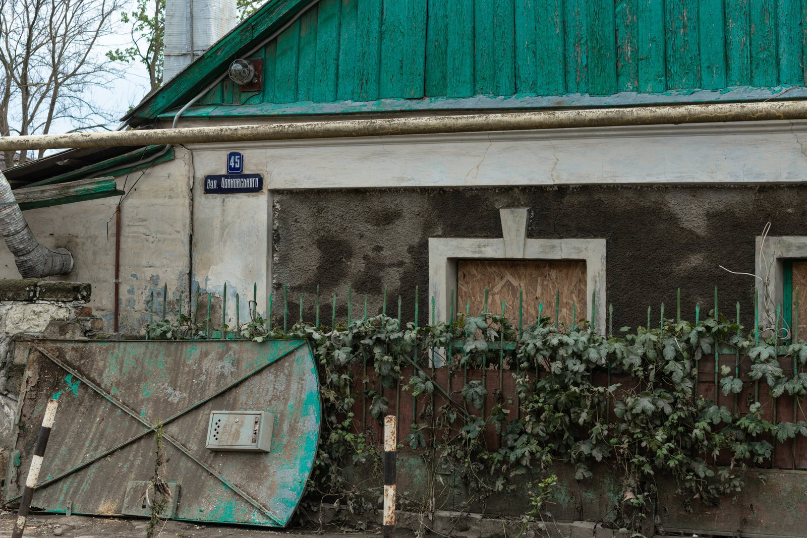
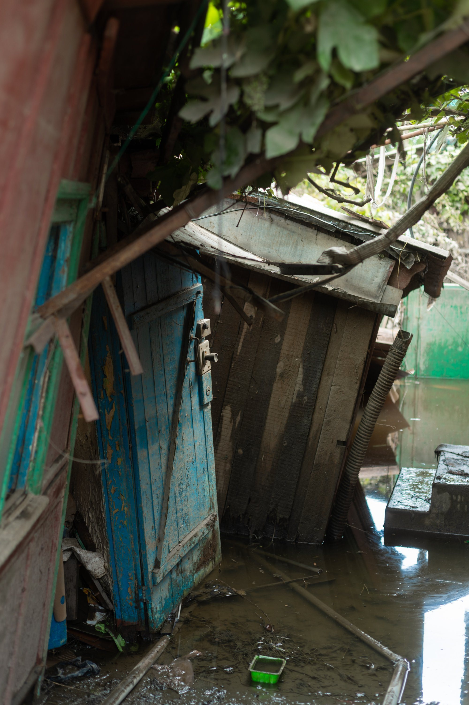
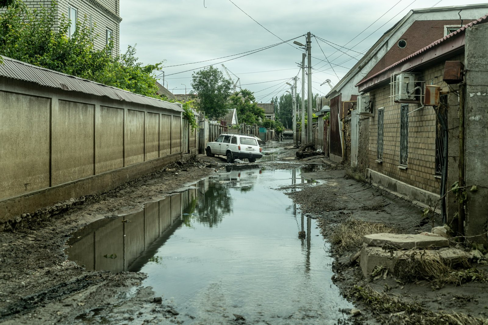
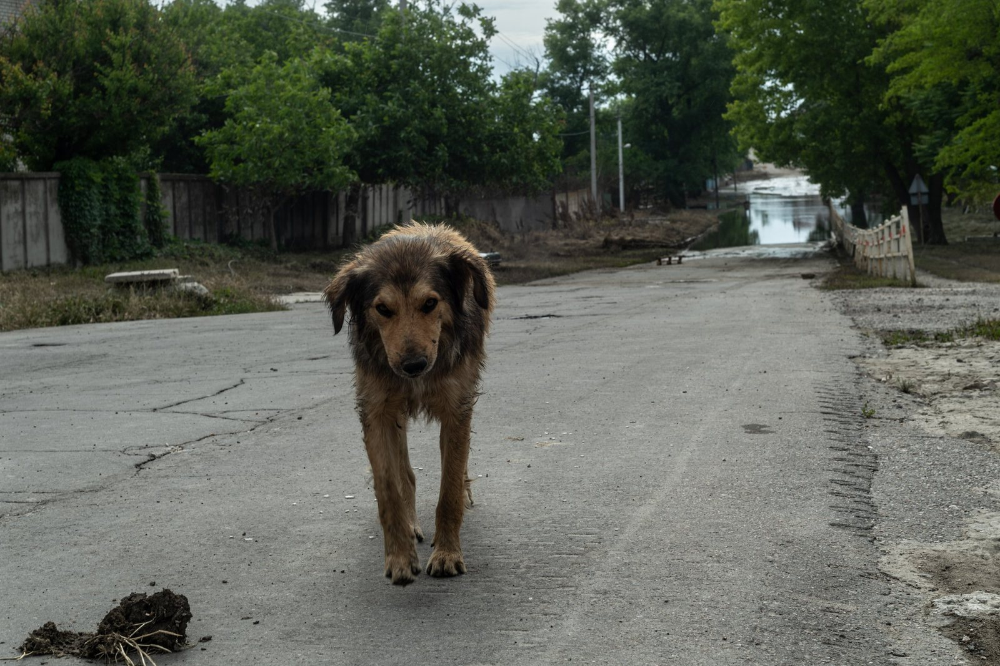
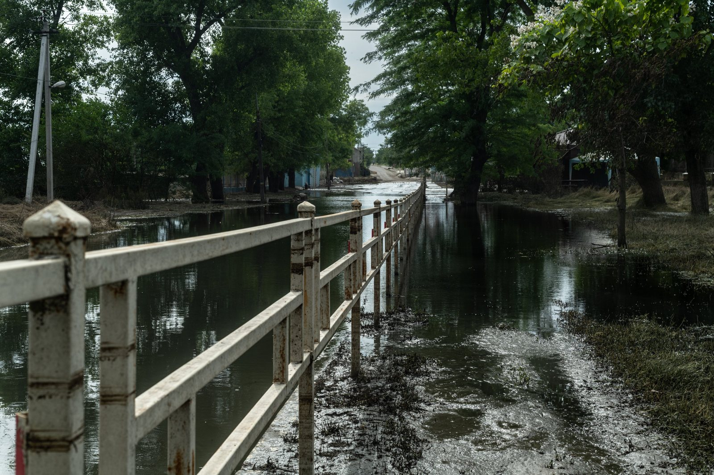
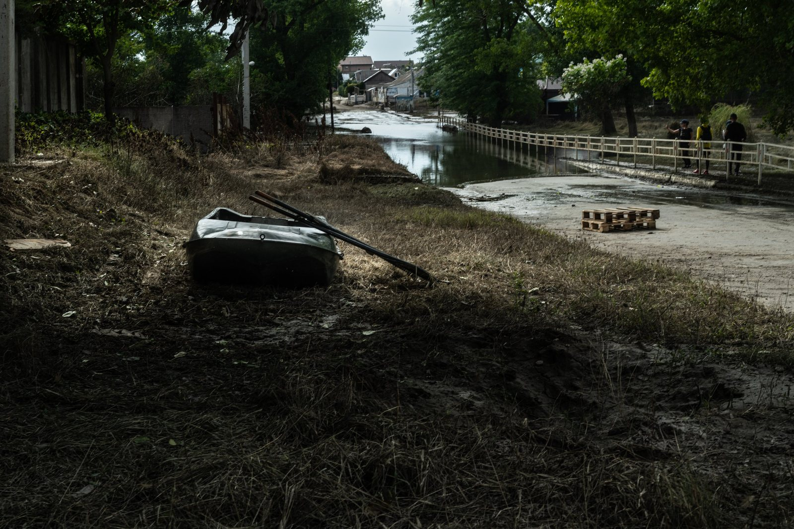
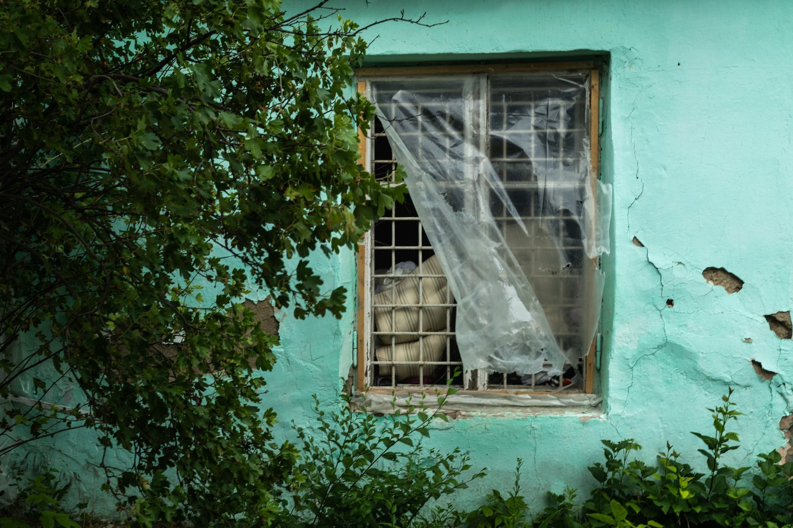
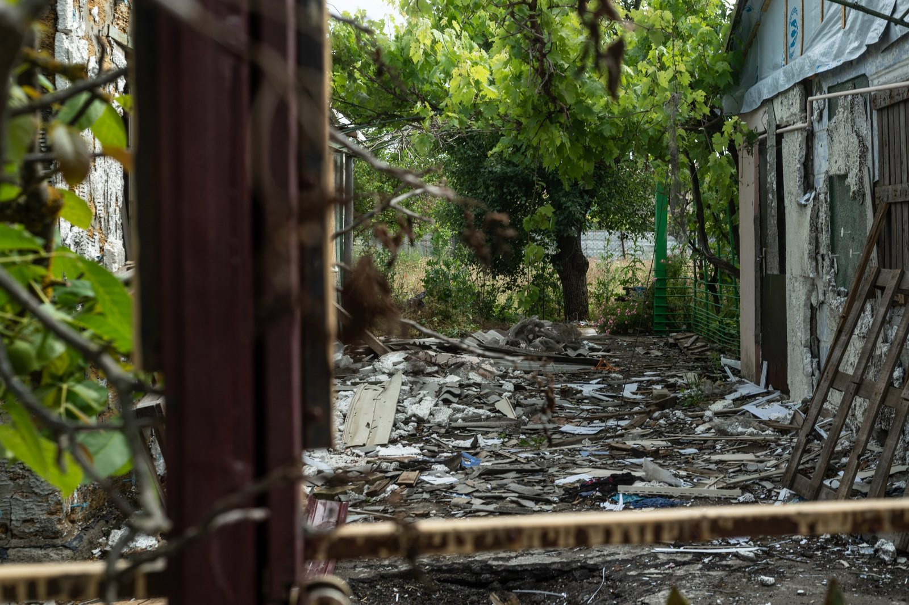
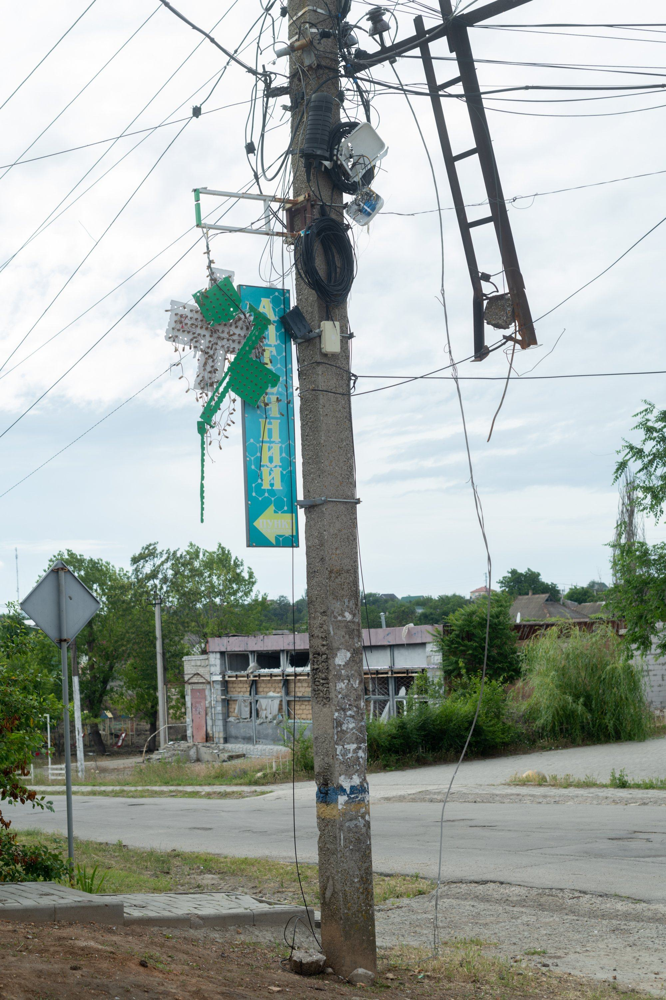